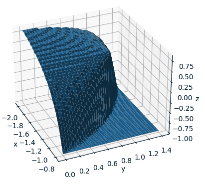

Plot non-linear inequalities with matplotlib
Posted by rioj7 on 2024-01-18
On 2024-01-18 user MysSk (now deleted) posted the question Plot non-linear inequalities with matplotlib on StackOverflow. Shortly after I posted an answer the question was deleted.
Here I show the question and solution so others might be able to find the page through a search engine.
The final version of the surface:

Question
I would like to plot this non-linear inequality in matplotlib
[-2 < x < -(4/5)] [0 < y < (20 + 25x)/(-1 + 10x)] [-1 < z < (16 + 15x - 9y - 10x*y)/(4 + 10x + 10y)]
It can be achieved with a scatter plot as:
import numpy as np import matplotlib.pyplot as plt spread = 50 x = np.linspace(-2, -4/5, spread) y = np.linspace(0, 2, spread) z = np.linspace(-1, 1, spread) xx, yy, zz = np.meshgrid(x, y, z) mask1 = yy < (20+25*xx)/(-1+10*xx) mask2 = zz < (16+15*xx-9*yy-10*xx*yy)/(4+10*xx+10*yy) mask = mask1 & mask2 fig = plt.figure() ax = fig.add_subplot(111, projection='3d') ax.scatter(xx[mask], yy[mask], zz[mask]) plt.show()
But I would like to have it as a surface without the being based on the scatter plot, so that I can get the boundaries more accurately.
Asked by MysSk - 2024-01-18
Answer
Looking at the plot from the code in the question it draws a lot of unneeded points.
To see the outline points I modified the mask variable.
for xl in range(spread): for yl in range(spread): if not mask[xl,yl,0]: continue for zl in range(1, spread): if mask[xl,yl,zl]: mask[xl,yl,zl-1] = False
You can use these points to let matplotlib draw a surface:
x2d, y2d = np.meshgrid(x,y) z2d, _ = np.meshgrid(x,y) for xl in range(spread): for yl in range(spread): xp = x2d[xl,yl] yp = y2d[xl,yl] z2d[xl,yl] = -1 for zl in range(1, spread): if mask[xl,yl,zl]: z2d[xl,yl] = zz[xl,yl,zl] fig = plt.figure() ax = fig.add_subplot(111, projection='3d') ax.plot_surface(x2d, y2d, z2d) plt.show()

We can get rid of the discrete look of the surface by calculating the Z coordinate that is the limit for a particular XY coordinate:
for xl in range(spread): for yl in range(spread): xp = x2d[xl,yl] yp = y2d[xl,yl] z2d[xl,yl] = -1 if not mask[xl,yl,0]: continue z2d[xl,yl] = (16+15*xp-9*yp-10*xp*yp)/(4+10*xp+10*yp)
Matplotlib draws the quads with 2 triangles but chooses the wrong variant. This gives a jagged edge at the Z=-1 plane.
By calculating the spacing of the Y coordinates based on the X coordinates we get a more accurate boundary. We also draw this boundary at Z=-1:
import numpy as np import matplotlib.pyplot as plt spread = 25 x = np.linspace(-2, -4/5, spread) y = (20+25*x)/(-1+10*x) xx, yy = np.meshgrid(x,y) zz, _ = np.meshgrid(x,y) for xl in range(spread): for yl in range(spread): xp = xx[xl,yl] yp = yy[xl,yl] zz[xl,yl] = -1 if yp >= (20+25*xp)/(-1+10*xp): continue zz[xl,yl] = max(-1, (16+15*xp-9*yp-10*xp*yp)/(4+10*xp+10*yp)) fig = plt.figure() ax = fig.add_subplot(111, projection='3d') ax.plot_wireframe(xx, yy, zz) ax.plot(x, y, [-1], linewidth=2.0, c='red') plt.show()
After posting this modified answer the question got deleted.
I was curious what other questions MysSk had posted:
- 2024-01-16: Plot interdependent data
The answer by Georgi I still have to find out how it works using
np.vectorize. - 2024-01-17: Plot inequality in matplotlib
The answer by weshouman probably was the inspiration to use the mask method of the question.
The answer by jared inspired me to construct a triangle version of the surface with the correct split of the quad for this problem.
Triangle version of the surface
Using the answer from jared as a starting point I constructed a version of the surface with triangles.
import numpy as np import matplotlib.pyplot as plt from matplotlib import tri # https://stackoverflow.com/a/77837252/9938317 def create_triangle_indices_from_meshgrid(n, m, orientation=1): """Returns the indices into the flattened meshgrid which will create triangles for `matplotlib.tri.Triangulation`. Provides 2 triangle orientations. One may be better than the other depending on the specific case. Orientation 1: Orientation 2: 1 - 4 1 - 4 | \ | | / | 2 - 3 2 - 3 """ indices = np.arange(n*m).reshape(n, m) p1 = indices[1:, :-1].flatten() p2 = indices[:-1, :-1].flatten() p3 = indices[:-1, 1:].flatten() p4 = indices[1:, 1:].flatten() if orientation == 1: triangles1 = np.stack((p1, p2, p3), axis=1) triangles2 = np.stack((p1, p3, p4), axis=1) elif orientation == 2: triangles1 = np.stack((p2, p3, p4), axis=1) triangles2 = np.stack((p1, p2, p4), axis=1) else: raise ValueError(f'Orientation number {orientation} does not exist.') return np.vstack((triangles1, triangles2)) def yEqu(x): return (20+25*x)/(-1+10*x) def zEqu(x, y): return (16+15*x-9*y-10*x*y)/(4+10*x+10*y) spread = 50 x = np.linspace(-2, -4/5, spread) y = yEqu(x) y = y[::-1] X, Y = np.meshgrid(x,y) Z = zEqu(X, Y) maskZ = np.ma.array(Z, mask = Y > yEqu(X)) Z = maskZ.filled(fill_value=-1) triangle_indices = create_triangle_indices_from_meshgrid(x.size, y.size, 1) triangles = tri.Triangulation(X.flat, Y.flat, triangles=triangle_indices) X_triangles = X.flatten()[triangle_indices] Y_triangles = Y.flatten()[triangle_indices] triangles.mask = (Y_triangles > yEqu(X_triangles)).any(1) fig = plt.figure() ax = fig.add_subplot(111, projection='3d') ax.plot_trisurf(triangles, Z.flat) plt.show()